O objetivo dessa página é relatar os resultados obtidos com a utilização da biblioteca OpenCV na implementação de algoritmos que lidam com processamento digital de imagens.
Assume-se que o leitor tenha certa bagagem com o tópico de processamento de imagens, de maneira que a teoria não será profundamente detalhada; outrossim, todos os programas serão apresentados com uma pequena contextualização teórica.
As implementações mostradas aqui foram testadas e executadas somente em ambiente de desenvolvimento Linux, mas devem funcionar em outros sistemas operacionais com devidas adaptações.
Após a correta instalação do OpenCV, salve o seguinte código como o arquivo Makefile. Você deverá usar esse arquivo no mesmo diretório que o arquivo .cpp a ser compilado.
.SUFFIXES:
.SUFFIXES: .c .cpp
CC = gcc
GCC = g++
.c:
$(CC) -I$(INCDIR) $(CFLAGS) $< $(GL_LIBS) -o $@
.cpp:
$(GCC) -Wall -Wunused -std=c++11 -O2 `pkg-config --cflags opencv` $< -o $@ `pkg-config --libs opencv cairo`Para compilar os exemplos faça
make listagem.cppSe tudo correr como esperado, deve surgir um .so no diretório atual com mesmo nome do arquivo .cpp.
1. Manipulação de pixels
Normalmente, as imagens que são processadas digitalmente não têm seus pixels diretamente alterados, de modo que os pixels resultantes do processamento são copiados para uma nova imagem, com o intuito de manter-se a imagem original disponível para outros futuros processamentos.
Ainda assim, algoritmos que atuam diretamente nos pixels da imagem fornecida podem realizar processamentos úteis, conforme será mostrado nos exemplos a seguir.
1.1 Negativo de uma região
O objetivo deste programa é criar uma janela negativa numa imagem. A dimensão da janela é definida por dois pontos (quatro coordenadas) passados pelo usuário. A seguir, mostro a minha solução e explico a listagem regions.cpp.
#include <iostream>
#include <opencv2/opencv.hpp>
#include<sstream>
using namespace cv;
using namespace std;
int* definir_pontos(int argc, char* argv[]){
stringstream ss;
int* pontos = new int[argc - 2];
for (int i = 2; i < argc; i++) {
ss.clear();
ss.str(argv[i]);
ss >> pontos[i-2];
}
return pontos;
}
int main(int argc, char *argv[]){
Mat image;
image = imread(argv[1], CV_LOAD_IMAGE_COLOR);
if(!image.data)
cout << "nao abriu a imagem corretamente";
int* pontos = definir_pontos(argc, argv);
namedWindow("regions", WINDOW_AUTOSIZE);
for(int i = pontos[0]; i < pontos[2]; i++){
for(int j = pontos[1]; j < pontos[3]; j++){
image.at<uchar>(i, j) = 255 - image.at<uchar>(i, j);
}
}
imshow("regions", image);
waitKey();
return 0;
}Os parâmetros necessários para a execução do programa são passados via linha de comando, ex.: ./regions imagem x1 y1 x2 y2 em que
-
imagem é o arquivo de imagem a ser processado e que deve estar no mesmo diretório de regions.cpp
-
x1 e y1 são as coordenadas vertical e horizontal do ponto superior esquerdo que delimita a janela negativa
-
x2 e y2 são as coordenadas vertical e horizontal do ponto inferior direito que delimita a janela negativa
A função definir_pontos é responsável por receber as coordenadas passadas pelo usuário via linha de comando e retornar um vetor contendo os pontos delimitantes da janela negativa. Esse vetor de pontos é criado em
int* pontos = definir_pontos(argc, argv);A criação da janela negativa se dá por meio de um laço duplo que percorre os pixels da imagem fornecida, por meio da aplicação da transformação
em que \(r_k\) é o tom de cinza do pixel.
for(int i = pontos[0]; i < pontos[2]; i++){
for(int j = pontos[1]; j < pontos[3]; j++){
image.at<uchar>(i, j) = 255 - image.at<uchar>(i, j);
}
}O código acima demonstra a transformação mencionada. Observe que cada pixel \((i,j)\) da imagem tem seu tom de cinza substituído por 255 menos o seu próprio tom de cinza. image.at<template>(i, j) é usada tanto para atribuir o novo valor ao pixel, quanto para acessar o valor do pixel.
O resultado da utilização de regions pode ser visualizado nas duas figuras a seguir, em que a primeira é a figura original e a segunda, a mesma figura processada. Para criar o efeito de imagem negativa, usei
./regions praia.jpg 50 50 250 250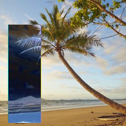
1.2 Troca dos quadrantes de uma imagem
O objetivo desse programa é simplesmente trocar os quadrantes de uma imagem qualquer.
Para isso, a imagem é subdividida em quatro imagens menores, denominadas A, B, C e D, em que tal subdivisão ocorre da esquerda para direita e de cima pra baixo. Em outras palavras, A corresponde à subimagem do canto superior esquerdo e D, à do canto inferior direito. O programa faz a troca de A com D e de B com C.
Isso pode ser usado, por exemplo, como ferramenta intermediária em outros algoritmos como o da transformada de Fourier de uma imagem. Abaixo está a implementação.
#include <iostream>
#include <opencv2/opencv.hpp>
#include <sstream>
using namespace cv;
using namespace std;
Mat load_img(string dir){
Mat image;
image = imread(dir, CV_LOAD_IMAGE_COLOR);
return image;
}
Mat* swapped_quadrants(Mat source){
int height = source.rows;
int midx = height / 2;
int width = source.cols;
int midy = width / 2;
Mat* slices = new Mat[4];
Mat A = source.operator()(Range(midx, height), Range(midy, width));
Mat B = source.operator()(Range(midx, height), Range(0, midy));
Mat C = source.operator()(Range(0, midx), Range(midy, width));
Mat D = source.operator()(Range(0, midx), Range(0, midy));
slices[0] = A;
slices[1] = B;
slices[2] = C;
slices[3] = D;
return slices;
}
Mat swapped_img(Mat source){
Mat H1, H2, V;
Mat* slices = swapped_quadrants(source);
hconcat(slices[0], slices[1], H1);
hconcat(slices[2], slices[3], H2);
vconcat(H1, H2, V);
return V;
};
int main(int argc, char *argv[]){
Mat image = load_img("praia.png");
Mat swapped = swapped_img(image);
if (image.rows != swapped.rows || image.cols != swapped.cols){
cout << "erro nas dimensões das imagens" << endl;
return -1;
}
namedWindow("swap", WINDOW_AUTOSIZE);
imshow("swap", swapped);
waitKey();
return 0;
}A função swapped_quadrants é a responsável por retornar um vetor com quatro objetos Mat, em que cada objeto é um dos quatro quadrantes da imagem. A extração das subimagens é feito com o método operator, que recebe como parâmetros dois objetos Range, em que o primeiro representa a região vertical e o segundo, a região horizontal do retângulo de extração.
A função swapped_img recebe a imagem original e, utilizando os quadrantes retornados de swapped_quadrants, cria uma imagem que é a concatenação dos quadrantes trocados, usando as funções de concatenação hconcat e vconcat.
A utilização do programa foi feita com
./trocaregioesainda com a imagem praia.jpg.
A imagem processada resultante foi
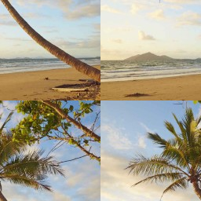
2. Rotulação de regiões
2.1 Contagem de bolhas com buracos
O objetivo desse algoritmo é a contagem de bolhas de cor preta, numa imagem binária com fundo branco. O plus é que o programa é capaz, também, de contar a quantidades de bolhas com buracos.
Abaixo, a implementação, posteriormente explicada.
#include <iostream>
#include <opencv2/opencv.hpp>
#include <sstream>
#define BRANCO 255
#define PRETO 0
using namespace cv;
using namespace std;
Mat load_img(string dir){
Mat image;
image = imread(dir, CV_LOAD_IMAGE_GRAYSCALE);
return image;
}
bool pixel_eh_cinza(Mat image, int i, int j){
return image.at<uchar>(i, j) > PRETO && image.at<uchar>(i, j) < BRANCO;
}
Mat colorir_background(Mat image){
CvPoint p;
p.x = 0;
p.y = 0;
floodFill(image, p, BRANCO);
return image;
}
Mat remover_bolhas_das_bordas(Mat image){
CvPoint p;
for (int j = 0; j < image.cols; j++) {
p.x = j;
p.y = 0;
floodFill(image, p, PRETO);
}
for (int j = 0; j < image.cols; j++) {
p.x = j;
p.y = image.rows - 1;
floodFill(image, p, PRETO);
}
for (int i = 0; i < image.rows; i++) {
p.x = 0;
p.y = i;
floodFill(image, p, PRETO);
}
for (int i = 0; i < image.rows; i++) {
p.x = image.cols - 1;
p.y = i;
floodFill(image, p, PRETO);
}
return image;
}
Mat labeling(Mat image, int* objs){
CvPoint p;
for (int i = 0; i < image.rows; i++) {
for (int j = 0; j < image.cols; j++) {
if(image.at<uchar>(i, j) == BRANCO){
*objs += 1;
p.x = j;
p.y = i;
floodFill(image, p, *objs);
}
}
}
return image;
}
Mat contar_buracos(Mat image, int* objs_esburacados){
CvPoint p;
for (int i = 0; i < image.rows; i++) {
for (int j = 0; j < image.cols; j++) {
p.x = j;
p.y = i;
if(image.at<uchar>(i, j) == PRETO){
if(pixel_eh_cinza(image, i, j - 1)){
floodFill(image, p, BRANCO);
p.x--;
floodFill(image, p, BRANCO);
*objs_esburacados += 1;
}else{
floodFill(image, p, BRANCO);
}
}
}
}
return image;
}
int main(int argc, char *argv[]){
Mat image = load_img("bolhas.png");
int objs = 0;
int objs_esburacados = 0;
namedWindow("labeling", WINDOW_AUTOSIZE);
imshow("labeling", image);
waitKey();
image = remover_bolhas_das_bordas(image);
imshow("labeling", image);
waitKey();
image = labeling(image, &objs);
imshow("labeling", image);
waitKey();
image = colorir_background(image);
imshow("labeling", image);
waitKey();
image = contar_buracos(image, &objs_esburacados);
cout << "Quantidade de objetos: " << objs << endl;
cout << "Quantidade de objetos esburacados: " << objs_esburacados << endl;
imshow("labeling", image);
waitKey();
return 0;
}A imagem utilizada com o algoritmo foi a seguinte:
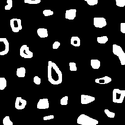
A função remover_bolhas_das_bordas é o primeiro passo na execução do programa. Essa função percorre as bordas da imagem simplesmente executando o floodFill em todos os pixels pretos encontrados. Esse passo é necessário porque não se pode assumir que as bolhas nas bordas tenham buracos ou não. A imagem abaixo mostra a figura sem as bolhas das bordas.
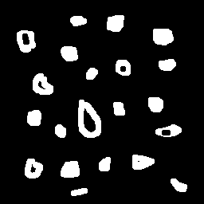
O próximo passo é realizar o processo de rotulação e contagem das bolhas que permaneceram na imagem, o que é feito pela função labeling. O parâmetro &objs que é passado na chamada dessa função é a quantidade total de objetos, inicializada em zero. labeling percorre a imagem procurando pixels brancos, de modo que, quando os acha, incrementa objs e faz floodFill no pixel atual com o valor de objs, que é justamente a quantidade de objetos até então encontrados, e, portanto, o rótulo utilizado. O floodFill garante que todos os pixels vizinhos ao pixel branco recentemente encontrado deixem de ser brancos, de modo que a região não será contabilizada novamente. Observe na figura abaixo o resultado da função labeling: de cima pra baixo, nota-se que as bordas vão ficando mais claras; isso é porque o valor de objs, que é incrementado toda vez que se acha uma nova região branca, é usado, como já explicado, para rotular a região encontrada.
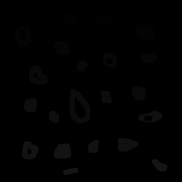
Agora que as regiões das bordas estão rotuladas, faz-se floodFill no fundo da cena com o tom 255 (branco). Como as bolhas nas bordas foram removidas, é seguro usar o pixel \({0, 0}\) como semente. A imagem resultante é a seguinte:
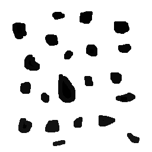
Finalmente, a última etapa do algoritmo é a aplicação da função contar_buracos. O parâmetro &objs_esburacados desempenha o mesmo papel que o parâmetro &objs passado na função labeling. A função contar_buracos percorre a imagem procurando por pixels pretos; veja que, na imagem processada até o momento, os pixels pretos só podem representar o interior de um objeto, pois todas as bordas estão pintadas com tom de cinza diferente de 0 (preto). Assim, quando um pixel preto é encontrado, se o seu vizinho da esquerda é cinza, trata-se de uma bolha com buraco; incrementa-se, portanto, &objs_esburacados e faz-se floodFill com o pixel atual (preto) e seu vizinho esquerdo (cinza) usando o tom 255. Em contrapartida, se um pixel preto é encontrado e seu vizinho esquerdo não é cinza, trata-se de um objeto que já foi contabilizado e que tinha mais de um buraco; nesse caso, faz-se somente floodfill nesse pixel sem incrementar-se objs_esburacados.
Na cena sobram somente os objetos sem buracos e rotulados como mostrado aqui:
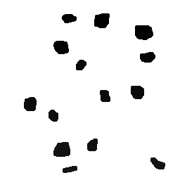
O resultado da contabilização dos objetos é mostrado no prompt:
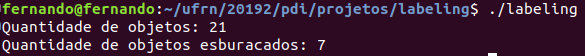
3. Manipulação de histogramas
3.1 Equalização de imagem
O algoritmo apresentado aqui realiza a equalização do histograma de uma imagem.
O histograma é uma função que mapeia um tom de cinza na quantidade de pixels presentes na imagem com esse tom de cinza. A equalização de histograma, falando sumariamente, redistribui os tons de cinza da imagem entre tons de cinza de um range pré-determinado. Outros detalhes serão apresentados durante a explicação da implementação, mostrada a seguir (foi assumido o processamento em tempo real e as imagens capturas em tom de cinza):
#include <iostream>
#include <opencv2/opencv.hpp>
using namespace cv;
using namespace std;
int main(int argc, char** argv){
VideoCapture cap;
int height, width;
int histSize = 256;
float range[] = {0, histSize};
const float* histRange = {range};
Mat image, copy;
Mat histogram, histogram_copy;
bool uniform = true, accumulate = false;
int histdisplay_width = 128, histdisplay_height = 68;
cap.open(0);
if(!cap.isOpened()){
cout << "cameras indisponiveis";
return -1;
}
width = cap.get(CV_CAP_PROP_FRAME_WIDTH);
height = cap.get(CV_CAP_PROP_FRAME_HEIGHT);
cout << "largura = " << width << endl;
cout << "altura = " << height << endl;
while(1){
cap >> image;
cvtColor(image, image, CV_BGR2GRAY);
copy = image.clone();
Mat histImage(histdisplay_height, histdisplay_width, CV_8U, Scalar(0, 0, 0));
Mat histImageCopy(histdisplay_height, histdisplay_width, CV_8U, Scalar(0, 0, 0));
calcHist(&image, 1, 0, Mat(), histogram, 1, &histSize, &histRange, uniform, accumulate);
histogram_copy = histogram.clone();
normalize(histogram_copy, histogram_copy, 0, histImage.rows, NORM_MINMAX, -1, Mat());
equalizeHist(image, image);
calcHist(&image, 1, 0, Mat(), histogram, 1, &histSize, &histRange, uniform, accumulate);
normalize(histogram, histogram, 0, histImage.rows, NORM_MINMAX, -1, Mat());
for(int i=0; i<histSize; i++){
line(
histImage,
Point(i, histdisplay_height),
Point(i, histdisplay_height - cvRound(histogram.at<float>(i))),
Scalar(255, 255, 255), 1, 8, 0
);
line(
histImageCopy,
Point(i, histdisplay_height),
Point(i, histdisplay_height - cvRound(histogram_copy.at<float>(i))),
Scalar(255, 255, 255), 1, 8, 0
);
}
histImage.copyTo(image(Rect(0, 0, histImage.cols, histImage.rows)));
histImageCopy.copyTo(copy(Rect(0, 0, histImage.cols, histImage.rows)));
imshow("equalizada", image);
imshow("nao-equalizada", copy);
if(waitKey(1) == 27) break;
}
return 0;
}cap é um objeto VideoCapture da biblioteca OpenCV para lidar com a captura de vídeo. Neste programa, optou-se por utilizar a câmera embutida do computador, com cap.open(0). O loop while mantém o programa capturando continuamente os frames e realizando os processamento que serão detalhados ao decorrer da explicação. Esse tipo de uso do while será usado a partir de agora em algumas implementações posteriores.
Continuando, a linha cvtColor(image, image, CV_BGR2GRAY); converte a imagem colorida capturada do objeto cap em uma imagem somente com tons de cinza. Cria-se uma cópia de imagem no estado atual, com copy = image.clone(), que será mostrada como um comparativo com a imagem processada pela equalização.
Os histogramas são objetos Mat do próprio OpenCV, sendo declarados em
Mat histImage(histdisplay_height, histdisplay_width, CV_8U, Scalar(0, 0, 0));
Mat histImageCopy(histdisplay_height, histdisplay_width, CV_8U, Scalar(0, 0, 0));O cálculo do histograma da imagem não-processada é feito em:
calcHist(&image, 1, 0, Mat(), histogram, 1, &histSize, &histRange, uniform, accumulate);histogram_copy, posteriormente, receberá o histograma da imagem equalizada.
A linha normalize(histogram_copy, histogram_copy, 0, histImage.rows, NORM_MINMAX, -1, Mat()); normaliza histogram_copy no intervalo 0 à quantidade de linhas de histImage, que é onde o objeto que armazenará a representação do histograma.
equalizeHist(image, image); realiza a equalização do histograma de image. Agora, histogram recebe o histograma normalizado de image, conforme mostrado em
calcHist(&image, 1, 0, Mat(), histogram, 1, &histSize, &histRange, uniform, accumulate);
normalize(histogram, histogram, 0, histImage.rows, NORM_MINMAX, -1, Mat());O desenho do histograma é realizado pelas linhas
for(int i=0; i<histSize; i++){
line(
histImage,
Point(i, histdisplay_height),
Point(i, histdisplay_height - cvRound(histogram.at<float>(i))),
Scalar(255, 255, 255), 1, 8, 0
);
line(
histImageCopy,
Point(i, histdisplay_height),
Point(i, histdisplay_height - cvRound(histogram_copy.at<float>(i))),
Scalar(255, 255, 255), 1, 8, 0
);
}Observe que, apesar da imagem ser composta apenas por tons de cinza, é necessário passar três valores para Scalar(), pois o histograma é desenhado colorido. Scalar(255, 255, 255) representa, portanto, o tom de cinza branco.
Em
histImage.copyTo(image(Rect(0, 0, histImage.cols, histImage.rows)));
histImageCopy.copyTo(copy(Rect(0, 0, histImage.cols, histImage.rows)));
imshow("equalizada", image);
imshow("nao-equalizada", copy);os desenhos dos histogramas são copiados para as imagens, que são mostradas em tempo real.
Como exemplo da aplicação do programa, observe imagens abaixo:
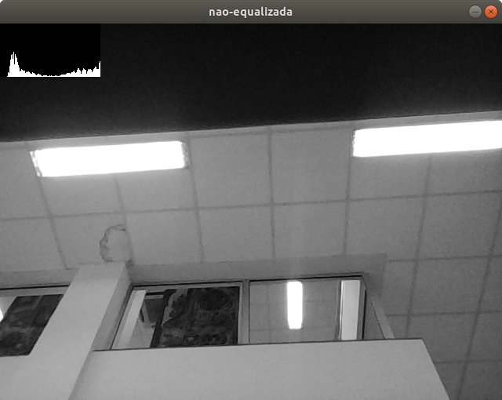
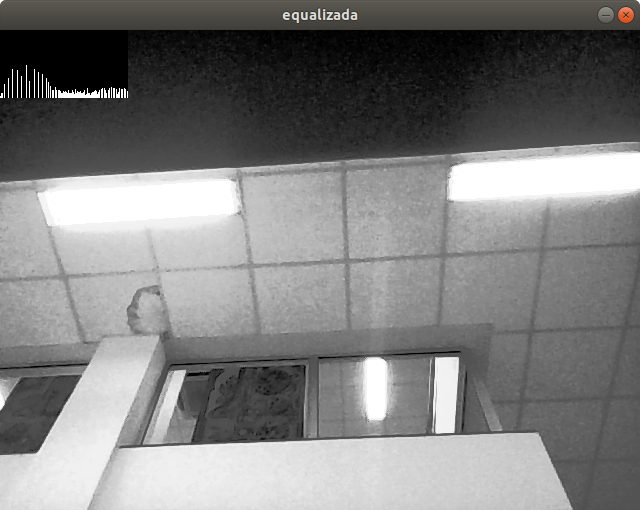
A imagem equalizada apresenta diferenças de constraste um pouco mais acentuadas que a imagem não-equalizada. Isso ocorre porque o processo de equalização "espalha" os tons de cinza mais frequentes na imagem original no histograma da imagem equalizada. Essas diferenças de contraste podem ser melhor observadas nas seguintes imagens, mais escuras que aquelas primeiras:
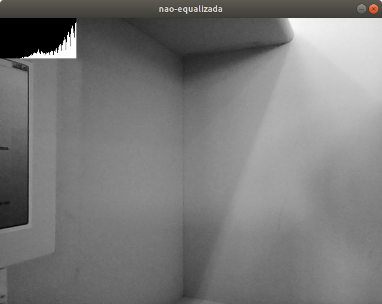
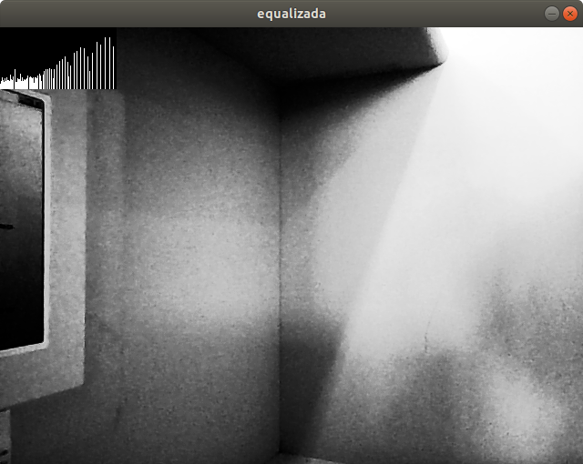
Observe o histograma mostrado na Figura 12: tal histograma mostra que os tons de cinza mais recorrentes foram os tons próximos ao branco. Agora, veja que o histograma mostrado na Figura 13 denota que os tons mais próximos ao branco da Figura 12 foram distribuídos pelo histograma da imagem equalizada, o que, de fato, resultou no aumento do contraste geral da imagem.
O caso demonstrado pelas Figuras 12 e 13 são os de maior interesse do processo de equalização: cena com tons de cinza relativamente próximos. A equalização, por aumentar o contraste, faz com que os tons da nova imagem tornem-se mais esparsos, evidenciando melhor as características da imagem adquirida.
3.2 Detecção de movimento
O programa de detetecção de movimento funciona, basicamente, comparando o histograma do frame atual com o histograma armazenado do frame imediatamente passado. A implementação é mostrada a seguir:
#include <iostream>
#include <opencv2/opencv.hpp>
using namespace cv;
using namespace std;
bool houve_movimento(Mat hist, Mat cp_hist, float maxima_diferenca=10, float threshold=7){
if ((hist.rows != cp_hist.rows) || (hist.cols != cp_hist.cols)){
return -1;
}
int mudancas = 0;
for(int i=0; i<hist.rows; i++){
if ((hist.at<float>(i) - cp_hist.at<float>(i)) > maxima_diferenca){
mudancas++;
}
}
if (mudancas > threshold){
return true;
}
return false;
}
int main(int argc, char** argv){
Mat image;
int width, height;
VideoCapture cap;
vector<Mat> planes;
Mat hist, cp_hist;
int nbins = 64;
float range[] = {0, 256};
const float *histrange = { range };
bool uniform = true;
bool acummulate = false;
Mat hsvImg;
string text_status;
cap.open(0);
if(!cap.isOpened()){
cout << "cameras indisponiveis";
return -1;
}
width = cap.get(CV_CAP_PROP_FRAME_WIDTH);
height = cap.get(CV_CAP_PROP_FRAME_HEIGHT);
while(1){
cap >> image;
split (image, planes);
calcHist(&planes[0], 1, 0, Mat(), hist, 1, &nbins, &histrange, uniform, acummulate);
normalize(hist, hist, 0, 256, NORM_MINMAX, -1, Mat());
if (houve_movimento(hist, cp_hist)){
text_status = "movimento detectado";
}else{
text_status = "";
}
cp_hist = hist.clone();
putText(image, text_status, Point2f(100, 480), FONT_HERSHEY_PLAIN, 2, Scalar(0, 0, 255), 2, 8, false);
imshow("image", image);
if(waitKey(1) == 27) break;
}
return 0;
}O core de motiondetector.cpp é, obviamente, a função houve_movimento. Os parâmetros dessa função são
-
hist: histograma do frame atual -
cp_hist: histograma copiado do frame passado, usado na comparação com o histograma do frame atual -
maxima_diferenca: limiar para que a frequência de uma escala de cinza emhistser considerada diferente da frequencia da mesma escala de cinza emcp_hist -
threshold: limiar da quantidade de frequências diferentes para que seja estabelecido que houve movimento
Note que os parâmetros de houve_movimento devem ser calibrados por meio de experimentação com o equipamento disponível pelo usuário. Por exemplo: se a câmera adicionar muito ruído à imagem, é interessante que se aumente o parâmetro threshold, o que tornará o alarme menos sensível ao ruído.
A linha
calcHist(&planes[0], 1, 0, Mat(), hist, 1, &nbins, &histrange, uniform, acummulate);armazena o histograma de planes[0] em hist, em que planes[0] é a componente azul de image. A quantidade de diferenças no histograma, portanto, é feita somente para planes[0].
O alarme para a existência de movimento é simplesmente um texto na tela, cujo conteúdo é determinado por:
if (houve_movimento(hist, cp_hist)){
text_status = "movimento detectado";
}else{
text_status = "";
}cp_hist = hist.clone() atualiza cp_hist, que será utilizado para as comparações com o próximo frame a ser adquirido.
Por fim, a linha
putText(image, text_status, Point2f(100, 480), FONT_HERSHEY_PLAIN, 2, Scalar(0, 0, 255), 2, 8, false);coloca o text_status na tela. Se não for detectado movimento, text_status = "", o que se traduz simplesmente na ausência do alarme.
As duas imagens seguintes mostram o programa funcionando:
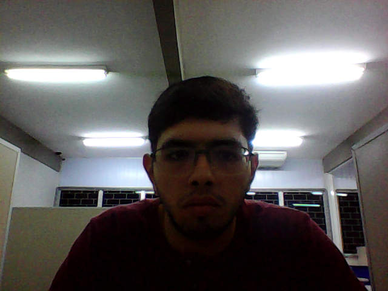
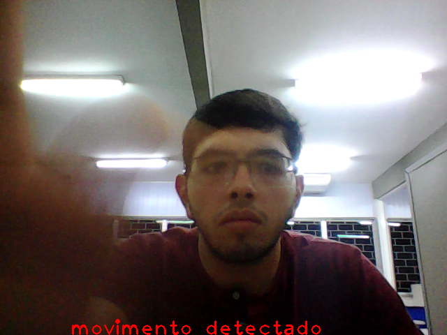
4. Filtragem no domínio espacial, parte 1
Realizar uma filtragem no domínio espacial significa aplicar transformações nos pixels de uma imagem com base em um kernel e copiar o resultado das transformações para uma outra imagem. O kernel, ou máscara, é uma matriz de dimensões \(n\times n\), com \(n\) preferencialmente ímpar e menor que as dimensões da imagem sendo tratada. Os coeficientes do kernel determinam o tipo de operação que a filtragem realiza na imagem.
Pode-se usar filtragem no domínio espacial, por exemplo, para detectar bordas na imagem, atenuar algumas espécies de ruído, dentre um vasto universo de outras aplicações.
A idéia da filtragem espacial é bastante simples e sua implementação é computacionalmente barata: centra-se o kernel em algum dos pixels da imagem, de modo que o valor desse pixel, após o processamento, será o resultado do somatório do produto dos coeficientes da máscara pelo tom de cinza alinhado com a posição de cada um dos coeficientes:
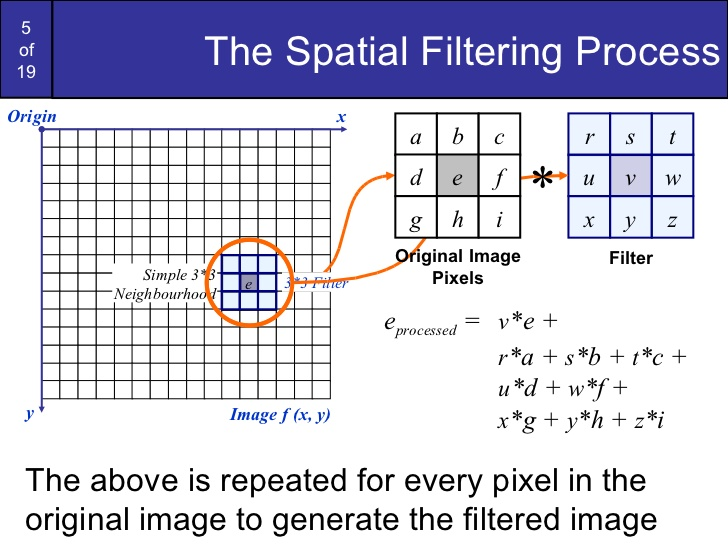
4.1 Filtro laplaciano do gaussiano
A listagem laplgauss.cpp apresenta uma interface para experimentação em tempo real de alguns dos filtros mais comuns para o processamento de imagens: média, gaussiano, sobel vertical, sobel horizontal, laplaciano e laplaciano do gaussiano.
-
Média: cada pixel recebe o valor da média dele mesmo e dos pixels vizinhos. Resulta numa imagem com transições mais suaves.
-
Gaussiano: reduz o ruído e elimina detalhes finos da imagem. É um filtro suavizante.
-
Sobel vertical: detecta transições verticais na imagem. É um filtro aguçador.
-
Sobel horizontal: também é um filtro aguçador, mas detecta transições horizontais.
-
Laplaciano: detecta as bordas da imagem. O resultado da filtragem com o laplaciano é comumente somado com a imagem original, de modo que a a imagem final é a imagem original com as bordas mais nítidas. O filtro laplaciano, por ser proveninente de uma derivação de segunda ordem, é muito sensível a ruídos.
-
Laplaciano do gaussiano: busca reduzir os efeitos da sensibilidade ao ruído do filtro laplaciano, por meio da aplicação prévia do filtro gaussiano.
A listagem laplgauss.cpp mostra a aplicação para visualização dos filtros em tempo real.
#include <iostream>
#include <opencv2/opencv.hpp>
using namespace cv;
using namespace std;
void printmask(Mat m){
cout << "\n";
for(int i=0; i<m.rows; i++){
for(int j=0; j<m.cols; j++){
cout << m.at<float>(i,j) << ",";
}
cout << endl;
}
}
Mat make_mask(float vec[], int size, bool average=false, float factor=1.0){
Mat tmp = Mat(size, size, CV_32F, vec);
if(average){
Mat aux;
scaleAdd(tmp, 1/factor, Mat::zeros(3, 3, CV_32F), aux);
swap(aux, tmp);
}
return tmp;
}
void menu(){
system("clear");
cout <<
"\na - Calcular modulo\n"
"m - Media\n"
"g - Gauss\n"
"v - Vertical\n"
"h - Horizontal\n"
"l - Laplaciano\n"
"d - Laplaciano do gaussiano\n"
"esc - Sair\n";
}
int main(int argvc, char** argv){
VideoCapture video;
float media[] = {
1, 1, 1,
1, 1, 1,
1, 1, 1
};
float gauss[] = {
1, 2, 1,
2, 4, 2,
1, 2, 1
};
float horizontal[]={
-1, 0, 1,
-2, 0, 2,
-1, 0, 1
};
float vertical[]={
-1, -2, -1,
0, 0, 0,
1, 2, 1
};
float laplacian[]={
0, -1, 0,
-1, 4, -1,
0, -1, 0
};
Mat cap, frame, frame32f, frameFiltered;
Mat mask(3, 3, CV_32F);
Mat result, result1;
double width, height, min, max;
int absolut;
char key;
video.open(0);
if(!video.isOpened())
return -1;
width = video.get(CV_CAP_PROP_FRAME_WIDTH);
height = video.get(CV_CAP_PROP_FRAME_HEIGHT);
std::cout << "largura = " << width << "\n" << endl;
std::cout << "altura = " << height << "\n" << endl;
mask = make_mask(media, 3, true, 9.0);
absolut = 1;
menu();
while(1){
video >> cap;
cvtColor(cap, frame, CV_BGR2GRAY);
flip(frame, frame, 1);
imshow("original", frame);
frame.convertTo(frame32f, CV_32F);
if(key != 'd'){
filter2D(frame32f, frameFiltered, frame32f.depth(), mask, Point(1,1), 0);
}else{
mask = make_mask(gauss, 3, true, 16.0);
filter2D(frame32f, frameFiltered, frame32f.depth(), mask, Point(1,1), 0);
mask = make_mask(laplacian, 3);
filter2D(frame32f, frameFiltered, frame32f.depth(), mask, Point(1,1), 0);
}
if(absolut){
frameFiltered=abs(frameFiltered);
}
frameFiltered.convertTo(result, CV_8U);
imshow("filtroespacial", result);
key = (char) waitKey(10);
if(key == 27) break;
switch(key){
case 'a':
menu();
cout << "\nOpcao: modulo " << absolut << "\n";
absolut = !absolut;
break;
case 'm':
menu();
cout << "\nOpcao: media\n";
mask = make_mask(media, 3, true, 9.0);
printmask(mask);
break;
case 'g':
menu();
cout << "\nOpcao: gauss\n";
mask = make_mask(gauss, 3, true, 16.0);
printmask(mask);
break;
case 'h':
menu();
cout << "\nOpcao: horizontal\n";
mask = make_mask(horizontal, 3);
printmask(mask);
break;
case 'v':
menu();
cout << "\nOpcao: vertical\n";
mask = make_mask(vertical, 3);
printmask(mask);
break;
case 'l':
menu();
cout << "\nOpcao: laplaciano\n";
mask = make_mask(laplacian, 3);
printmask(mask);
break;
case 'd':
menu();
cout << "\nOpcao: laplaciano do gaussiano\n";
break;
default:
break;
}
}
return 0;
}O programa é executado com ./laplgauss.
Duas janelas se abrirão, uma com a imagem original e outra com a imagem processada. Um menu é continuamente mostrado no prompt, que exibirá uma lista de teclas que, ao serem pressionadas, fazem com que a imagem original seja filtrada com o correspondente filtro à tecla.
As máscaras são declaradas nas linhas a seguir como vetores do tipo float:
float media[] = {
1, 1, 1,
1, 1, 1,
1, 1, 1
};
float gauss[] = {
1, 2, 1,
2, 4, 2,
1, 2, 1
};
float horizontal[]={
-1, 0, 1,
-2, 0, 2,
-1, 0, 1
};
float vertical[]={
-1, -2, -1,
0, 0, 0,
1, 2, 1
};
float laplacian[]={
0, -1, 0,
-1, 4, -1,
0, -1, 0
};Essas máscaras são passadas como o parâmetro vec à função make_mask:
Mat make_mask(float vec[], int size, bool average=false, float factor=1.0){...-
size: dimensão \(n\) da máscara -
average: se verdadeiro, faz com que os elementos da máscara sejam divididos pelo parâmetrofactor -
factor: fator de divisão para os elementos da máscara
A instrução frame.convertTo(frame32f, CV_32F); converte o frame atual para forma CV_32F. Essa conversão é necessária para o correto funcionamento da função filter2D, nativa do OpenCV.
A filtragem espacial está implementada em
if(key != 'd'){
filter2D(frame32f, frameFiltered, frame32f.depth(), mask, Point(1,1), 0);
}else{
mask = make_mask(gauss, 3, true, 16.0);
filter2D(frame32f, frameFiltered, frame32f.depth(), mask, Point(1,1), 0);
mask = make_mask(laplacian, 3);
filter2D(frame32f, frameFiltered, frame32f.depth(), mask, Point(1,1), 0);
}A função filter2D funciona com os seguintes parâmetros
-
frame32f: frame convertido para o tipo de dadoCV_32F -
frameFiltered:frame32fapós o processo de filtragem -
frame32.depth(): determina a profundidade desejada paraframeFiltered -
maské a máscara utilizada para filtragem -
Point(1,1)indica que o elemento central demaskserá o pivot de alinhamento com os pixels defram32f -
0 significa que os pixels não recebem acréscimo quando são armazenados em
frameFiltered
key é uma variável do tipo char, que armazena a última tecla pressionada pelo usuário. A tecla d equivale à aplicação do filtro laplaciano do gaussiano, que foi implementado com a aplicação do filtro gaussiano seguida da aplicação do filtro laplaciano; isso está contido dentro do bloco else acima. Os demais valores que podem ser assumidos por key executam a suite dentro de if(key != 'd').
A linha frameFiltered.convertTo(result, CV_8U); converte o frame filtrado para o formato CV_8U, necessário para a exibição na tela.
À exceção de quando k = 'd', os blocos switch-case simplesmente armazenam a última tecla pressionada na variável key e criam a nova máscara que vai ser usado na filtragem dos frames a serem adquiridos (quando key = 'd', a máscara é criada no bloco else que implementa a filtragem da imagem).
Um exemplo do funcionamento do programa é mostrado abaixo:
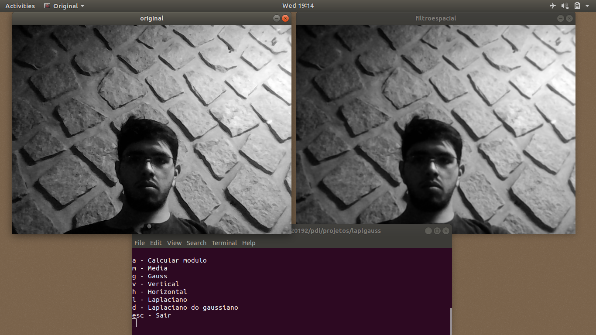
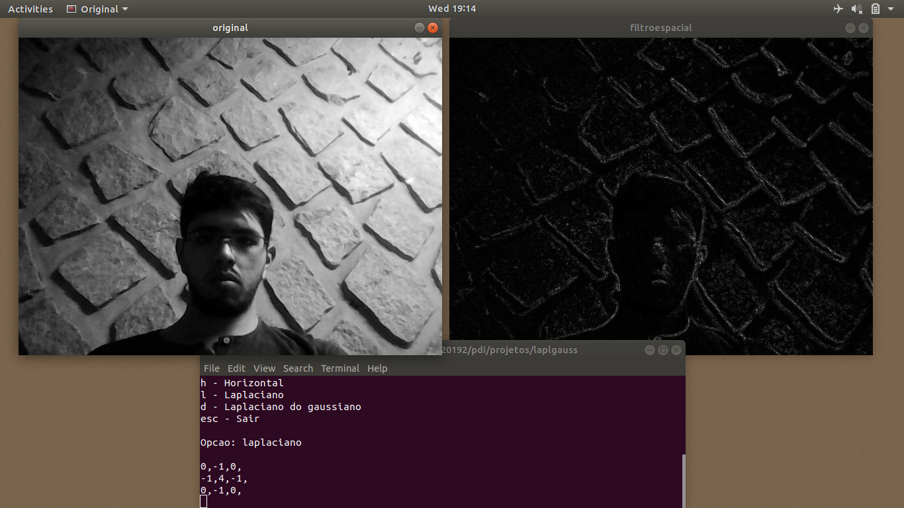
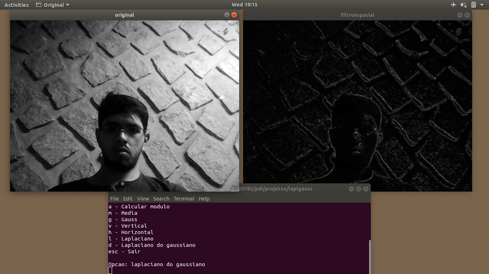
Teoricamente, só se notaria grande diferença entre o filtro laplaciano e o filtro laplaciano do gaussiano caso a imagem adquirida fosse muito ruidosa, o que não é o caso. A aplicação dos dois filtros, portanto, gerou resultados bastante semelhantes.
5. Filtragem no domínio espacial, parte 2
5.1 Imagem com tilt-shift
As imagens criadas com a técnica tilt-shift são resultado da soma de duas outras imagens formadas a partir de uma mesma imagem-fonte: uma que apresenta somente as bordas desfocadas e outra que apresenta somente o centro em foco. A idéia é criar um efeito artístico que dá mais atenção à alguma região específica da imagem.
A listagem tiltshift.cpp mostra a implementação desse recurso. A discussão sobre a implementação segue logo em seguida.
#include <iostream>
#include <opencv2/opencv.hpp>
#include <math.h>
using namespace cv;
using namespace std;
Mat filtered, original_32f, out1, out2, tiltshifted;
Mat channels[3], aux_channels[3];
Mat kernel(3, 3, CV_32F);
float mascara[] = {
1, 2, 1,
2, 4, 2,
1, 2, 1
};
Mat original = imread("image.jpg");
int decay_slider = 0, decay_slider_max = 100;
int offset_slider = 0, offset_slider_max = 100;
int alpha_slider = 0, alpha_slider_max = 100;
int average_slider = 0, average_slider_max = 300;
double alpha;
double dcy;
double avg;
int offset;
char trackbar_name[50];
char key;
Mat alpha_mask = Mat::zeros(Size(original.rows, original.cols), CV_8U);
Mat c_alpha_mask = Mat::zeros(Size(original.rows, original.cols), CV_8U);
double alphafunc(double d, int offset, int x, int rows){
double ptop = offset;
double pbottom = rows - offset;
return 0.5 * (tanh((x - ptop)/d) - tanh((x - pbottom)/d));
}
void make_mask(Mat* mask, double d, int offset){
int rows = mask->rows;
int cols = mask->cols;
for(int i = 0; i < rows; i++){
for(int j = 0; j < cols; j++){
mask->at<uchar>(i, j) = int(255 * alphafunc(d, offset, i, rows));
}
}
}
void make_negative(Mat* destiny, Mat source){
for(int i = 0; i < destiny->rows; i++){
for (int j = 0; j < destiny->cols; j++){
destiny->at<uchar>(i, j) = 255 - source.at<uchar>(i, j);
}
}
};
Mat make_kernel(float vec[], int size, bool mascara=false, float factor=1.0){
Mat tmp = Mat(size, size, CV_32F, vec);
if(mascara){
Mat aux;
scaleAdd(tmp, 1/factor, Mat::zeros(size, size, CV_32F), aux);
swap(aux, tmp);
}
return tmp;
}
void on_trackbar_change(int, void*){
alpha = (double) alpha_slider/alpha_slider_max;
dcy = (double) decay_slider;
offset = (double) offset_slider;
avg = (double) average_slider/100;
make_mask(&alpha_mask, dcy, offset);
make_negative(&c_alpha_mask, alpha_mask);
split(original, channels);
multiply(alpha_mask, channels[0], aux_channels[0], 1/255.0);
multiply(alpha_mask, channels[1], aux_channels[1], 1/255.0);
multiply(alpha_mask, channels[2], aux_channels[2], 1/255.0);
merge(aux_channels, 3, out1);
original.convertTo(original_32f, CV_32F);
kernel = make_kernel(mascara, 3, true, 16.0);
for(int i=0; i<10; i++){
filter2D(original_32f, filtered, original_32f.depth(), kernel, Point(1, 1), 0);
original_32f = filtered.clone();
}
filtered.convertTo(out2, CV_8U);
split(out2, channels);
multiply(c_alpha_mask, channels[0], aux_channels[0], 1/255.0);
multiply(c_alpha_mask, channels[1], aux_channels[1], 1/255.0);
multiply(c_alpha_mask, channels[2], aux_channels[2], 1/255.0);
merge(aux_channels, 3, out2);
addWeighted(out1, alpha, out2, 1 - alpha, 0.0, tiltshifted);
addWeighted(tiltshifted, avg, tiltshifted, 0.0, 0.0, tiltshifted);
imshow("tiltshift", tiltshifted);
}
int main(int argvc, char** argv){
namedWindow("tiltshift", WINDOW_AUTOSIZE);
sprintf(trackbar_name, "Alpha %d", alpha_slider_max);
createTrackbar(trackbar_name, "tiltshift", &alpha_slider, alpha_slider_max, on_trackbar_change);
sprintf(trackbar_name, "Decay %d", decay_slider_max);
createTrackbar(trackbar_name, "tiltshift", &decay_slider, decay_slider_max, on_trackbar_change);
sprintf(trackbar_name, "Offset %d", offset_slider_max);
createTrackbar(trackbar_name, "tiltshift", &offset_slider, offset_slider_max, on_trackbar_change);
on_trackbar_change(alpha_slider, 0);
key = waitKey(0);
if(key == 's'){
cout << "saving edited copy" << endl;
imwrite("image-edited.jpg", tiltshifted);
}
return 0;
}A imagem com bordas desfocadas resulta da ponderação da imagem original filtrada com uma outra imagem, como a que é mostrada na Figura 19:
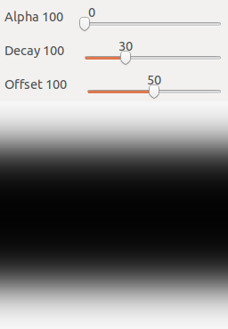
A imagem com o centro em foco resulta da ponderação da imagem original com uma outra imagem, como a que é mostrada na Figura 20:
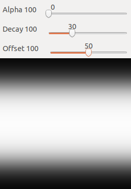
A Figura 20 é obtida do negativo da Figura 19, através da função make_negative, que recebe como primeiro parâmetro a referência para a imagem a ser formada e, como segundo parâmetro, a imagem-fonte a ser negativada. Os parâmetros expostos pela interface, como se nota das Figuras 19 e 20, são:
-
Alpha: controla a "mistura" das imagens desfocada e com foco. 0 é somente a imagem desfocada e 100 é somente a imagem com foco -
Decay: controla a velocidade de decaimento das bordas das imagens ponderantes -
Offset: controla a distância em pixels das bordas da região de desfoque -
Average(não mostrado nas Figuras 19 e 20): controla o nível médio dos tons da imagem. É um fator de correção para corrigir possíveis escurecimentos notados nas imagens processadas. Vai de 0 a 300%.
float mascara[] = {
1, 2, 1,
2, 4, 2,
1, 2, 1
};A máscara mostrada acima é usada na filtragem da imagem somente com as bordas desfocadas. Trata-se de um filtro gaussiano.
As imagens ponderantes são criadas em
Mat alpha_mask = Mat::zeros(Size(original.rows, original.cols), CV_8U);
Mat c_alpha_mask = Mat::zeros(Size(original.rows, original.cols), CV_8U);alpha_mask e c_alpha_mask são matrizes do tipo CV_8U compostas somente por zeros e com mesmas dimensões da imagem original a ser processada.
A interação do usuário com o programa se dá por meio da função callback on_trackbar_change, que é chamada todas as vezes que um dos sliders da interface é manipulado pelo usuário. Essa função, que é o core de tiltshift.cpp é detalhada a seguir.
As linhas
alpha = (double) alpha_slider/alpha_slider_max;
dcy = (double) decay_slider;
offset = (double) offset_slider;
avg = (double) average_slider/100;atualizam os valores da variáveis de estado alpha, dcy, offset e avg, que serão utilizadas na construção das imagens ponderantes, como se pode ver em
make_mask(&alpha_mask, dcy, offset);
make_negative(&c_alpha_mask, alpha_mask);make_mask, por sua vez, faz uso de alphafunc para atribuir valor aos pixels de alpha_mask. A função alphafunc retorna o resultado da operação
em que \(x\) é a linha do pixel atual, \(p_1\) é a linha resultante do offset a partir da borda superior, \(p2\) é a linha resultante do offset a partir da borda inferior e \(d\) é a intensidade do decaimento das bordas. O range de valores retornados dessa função é \([0,1\)] de modo que a linha, em make_mask,
mask->at<uchar>(i, j) = int(255 * alphafunc(d, offset, i, rows));converte esses valores para o conjunto de inteiros \(0, 1, 2, \ldots, 255\), o que é necessário para que se forme as imagens exibidas nas Figuras 19 e 20 com o tipo uchar.
Seguindo, a linha split(original, channels); divide cada canal da imagem original entre o vetor de três posições channels, em que cada posição desse vetor armazena um objeto Mat do OpenCV. Os canais de channels são então ponderados pela imagem alpha_mask e armazenados em aux_channels; note que 1/255.0 é um fator de escala para compensar a multiplicação por 255, em make_mask, que possibilitou a amostra das Figuras 19 e 20 no monitor.
Quando se fala em "ponderação", fala-se em multiplicação ponto a ponto de uma matriz por outra, o que é realizado pela função multiply do OpenCV; essa função recebe as duas matrizes a serem multiplicadas em seus dois primeiros argumentos e armazena o resultado na matriz passada no terceiro argumento. O quarto argumento é um fator de escala opcional, setado como 1/255.0.
multiply(alpha_mask, channels[0], aux_channels[0], 1/255.0);
multiply(alpha_mask, channels[1], aux_channels[1], 1/255.0);
multiply(alpha_mask, channels[2], aux_channels[2], 1/255.0);merge(aux_channels, 3, out1); junta os três canais processados no objeto Mat out1, que é a imagem somente com centro em foco.
As linhas seguintes filtram a imagem original e ponderam-na por c_alpha_mask; o resultado é novamente armazenado em aux_channels e os canais são reunidos com a função merge no objeto Mat out2, que é a imagem somente com as bordas desfocadas.
original.convertTo(original_32f, CV_32F);
kernel = make_kernel(mascara, 3, true, 16.0);
for(int i=0; i<10; i++){
filter2D(original_32f, filtered, original_32f.depth(), kernel, Point(1, 1), 0);
original_32f = filtered.clone();
}
filtered.convertTo(out2, CV_8U);
split(out2, channels);
multiply(c_alpha_mask, channels[0], aux_channels[0], 1/255.0);
multiply(c_alpha_mask, channels[1], aux_channels[1], 1/255.0);
multiply(c_alpha_mask, channels[2], aux_channels[2], 1/255.0);
merge(aux_channels, 3, out2);O for loop está sendo usado para aplicar o filtro 10 vezes, para que se obtenha um resultado de suavização suficientemente satisfatório.
A linha
addWeighted(out1, alpha, out2, 1 - alpha, 0.0, tiltshifted);armazena o resultado da ponderação de out1 e out2 em Mat tiltshifted. A imagem out1 é ponderada com peso alpha, enquanto a imagem out2, com peso 1 - alpha.
Por fim, addWeighted(tiltshifted, avg, tiltshifted, 0.0, 0.0, tiltshifted); corrige o nível médio dos tons da imagem.
O resultado da execução do programa pode ser visto nas seguintes imagens:
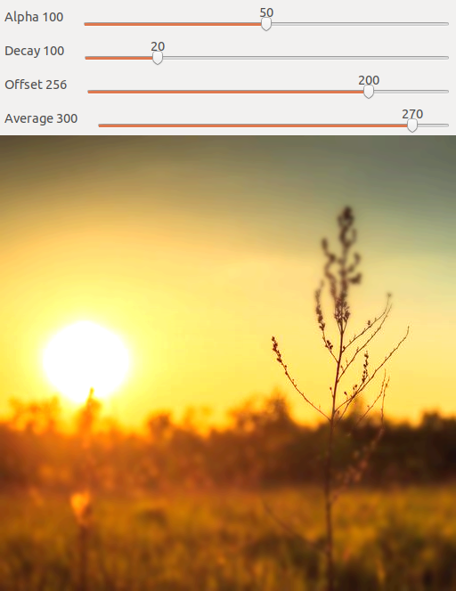
Observe que as bordas da Figura 22 estão desfocadas, um efeito bem interessante para se ressaltar a importância de um elemento da cena.
5.2 Vídeo com tilt-shift
Em andamento.